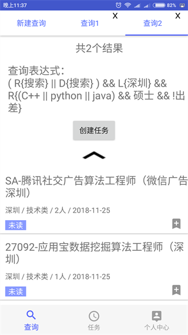
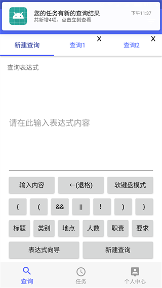
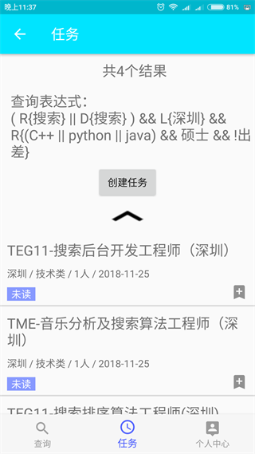

任务
如果当前并没有满意的查询结果怎么办呢？比较笨的办法是每隔一段时间手动查询一下。但这样毕竟很麻烦也浪费时间，要每隔一段时间去检查一下有没有新的符合自己需求的职位。
对于这个问题，系统提供了一种解决方案，那就是基于查询结果创建查询任务提交到服务器，服务器在每次出现新职位时都会判断该职位是否符合查询条件，如果符合则会添加到任务的查询结果中。
还是用上一章节用过的表达式( R{搜索} || D{搜索} ) && L{深圳} && R{(C++ || python || java) && 硕士 && !出差}来举例，假设那个用户在进行查询的时候只搜到了2个结果，如图：

而在这两个结果里，没有用户想要的，那么用户可以基于这个查询创建查询任务，如图：
因为任务是对未来将会出现的职位的查询，所以刚创建的时候查询结果自然是零，用户现在不用去管它，然后假设某一天腾讯招聘网突然多了4个符合要求的职位，那么：

APP会弹出通知，告诉用户任务有新的查询结果了，点击任务后：

果然多了4个结果，然后就可以像普通的查询那样，检查查询结果看看新出现的职位是否符合自己的要求了。
可以看到，任务其实是一种动态的查询。查询是一次性的静态操作，结果不会变动，而任务在创建那一刻是没有查询结果的，但未来会慢慢动态增加，直到用户找到自己想要的结果，这就是两者的区别。
那么怎么添加任务呢？有两种方法，一是在查询结果界面，点击创建任务按钮添加
另一种方法是点击任务界面的+号添加
然后填写任务名称和任务的截止时间，点击确定创建任务即可。
创建好之后，APP在后台会每隔一分钟访问一次服务器，发现用户所持有的任务有新的查询结果时，则会发出通知。